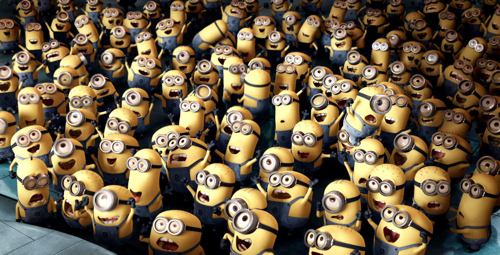
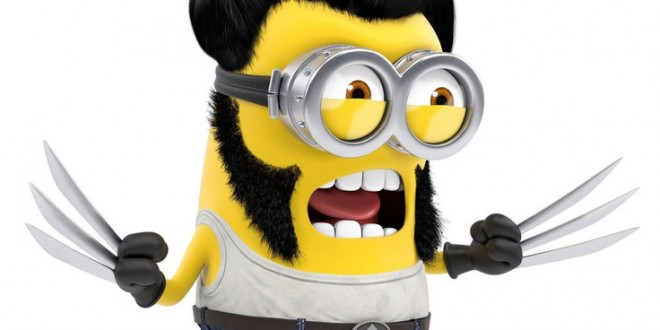
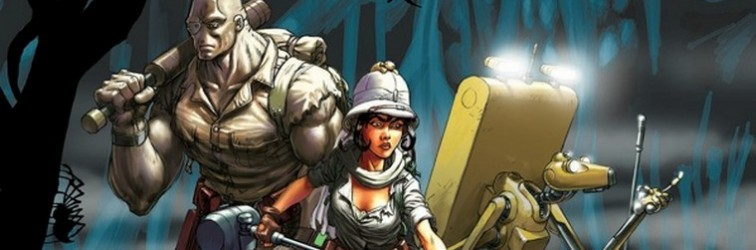
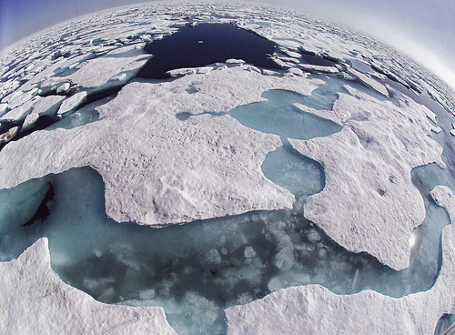
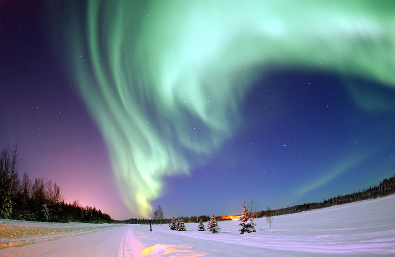
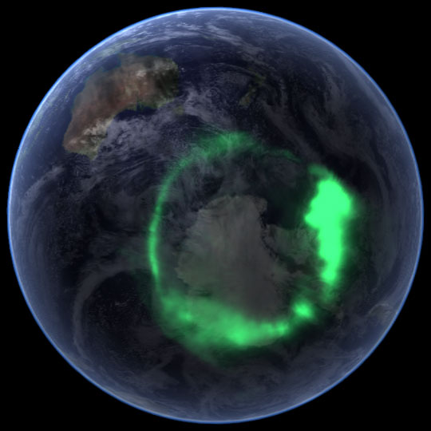
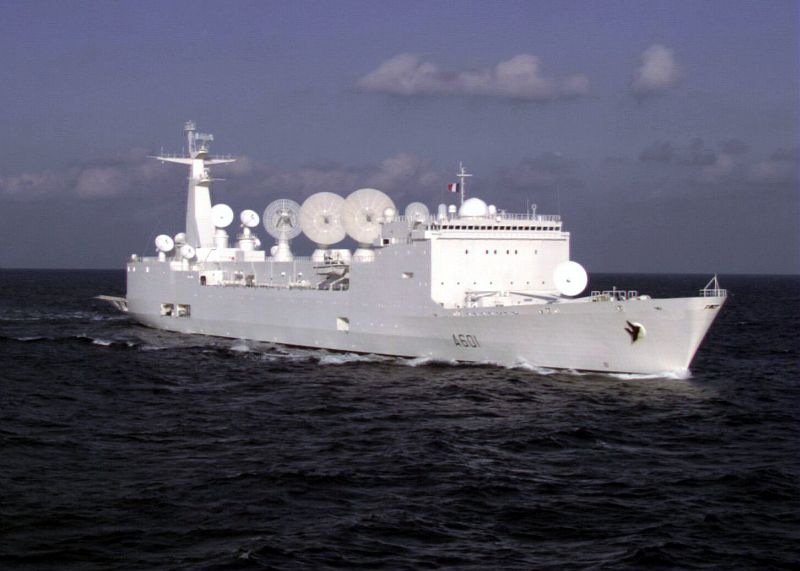
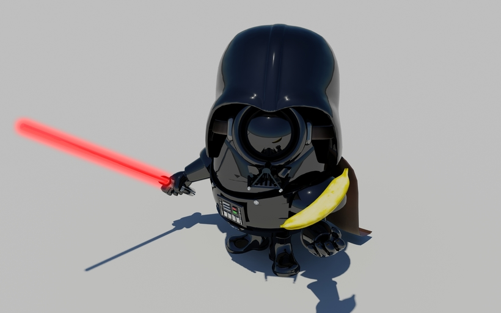
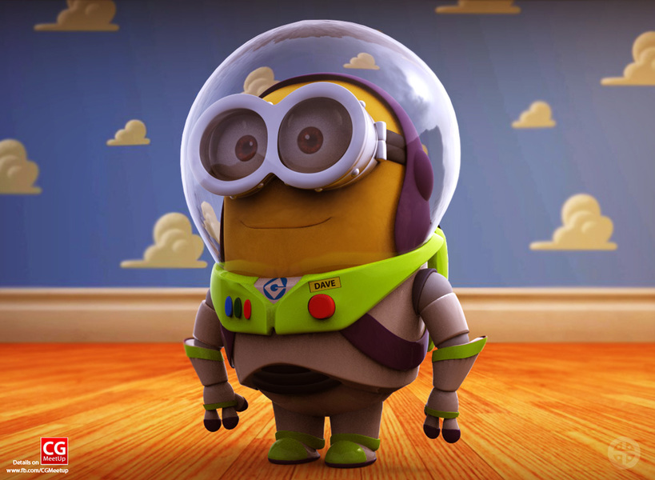

Quiz de Noël
24 Décembre 2013
Qui veux jouer ?
Alors a l'attaque !
Question 1
Comment se dépace le Père Noël ?
- En voiture
- En chameau
- En trainneau
Question 2
Qui suis-je ?
- Wall-e
- wallee
- Wall-i
Question 3
Combien de jours possède le calendrier de l'avent ?
- 24 jours
- 25 jours
- 31 jours
Question 4
Comment s'appelle l'inventeur de ces héros ?

Comment s'appelle l'inventeur de ces héros ?
- Little Big Planet
- Marvel
- DC Comic
Question 5
Quel est le sandwich le plus vendu de McDonald's ?
Quel est le sandwich le plus vendu de McDonald's ?
- Le CheeseBurger
- Le Royal Cheese
- Le Big Mac
Question 6
Dans la série Navis

Quelle est la nature de son ami Bobo ?
- Constructeur
- Voyageur
- Migreur
Moka, pas lé to ma laki, bokji ?
Question 7
Pourquoi ces deux Minions rigolent-ils ?
Le directeur de l'agence AVL s'appel :
- De la Fesse Dure
- De la fesse Molle
- De la Molle Fesse
Question 8
Quelle est la forme de la grande ours
Quelle est la forme de la grande ours
- Une caserolle
- Un ours
- Une poêlle
Question 9
Quelle est la température du zéro absolue ?
Quelle est la température du zéro absolue ?
- - 213,15 °C
- - 273,15 °C
- - 293,15 °C
Question 10
Où se trouve se phénomène ?
Où voit-on les aurores boréales ?
- Au pôle nord
- A l'équateur
- Au pôle sud
Question 11
Comment s'appel ce navire ?
Quel est le nom de ce navire capable de suivre une pièce de 2€, avec précision, en orbitre terrestre ?
- Le Ponge
- Le Gonge
- Le Monge
Question 12
Comment s'appel ce personnage ?
Comment s'appel ce personnage ?
- Minion Vador
- Dark J'adore
- Dark Vador
Question 13
Comment s'appel ce personnage ?
Comment s'appel ce personnage ?
- Buzz l'éclair
- Dave
- Buzz Brioche